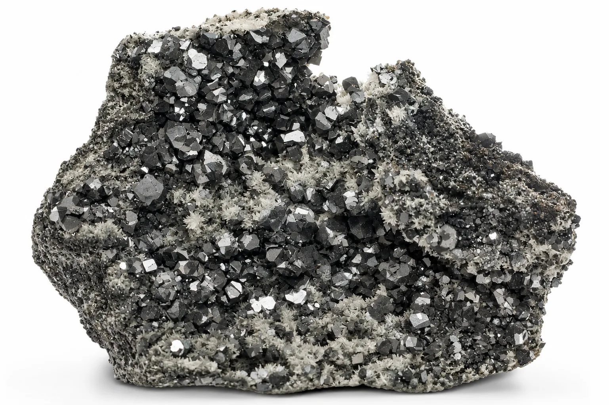

A geological and commercial overview of polymetallic sulfide deposits and refractory bauxite for global smelters.
Beyond chromite and copper, Balochistan hosts substantial reserves of lead, zinc, and refractory-grade bauxite across the southern Kirthar fold belt and central highlands. For complete chemical assays and commercial supply specifications, review our technical dossiers for Lead-Zinc Sulfide Ore and Refractory Bauxite Ore.
Lasbela–Khuzdar Lead-Zinc Belt
The sedimentary-exhalative (SEDEX) lead-zinc belt stretching from Lasbela through Khuzdar (including the famed Duddar underground mine and Gunga prospects) is one of South Asia’s most prolific base metal domains. Ore occurs primarily as stratiform sphalerite (zinc sulfide, ZnS) and galena (lead sulfide, PbS) hosted within Jurassic carbonate sequences.
Combined resource estimates for the belt exceed 50 million metric tons of sulfide ore, with combined Pb+Zn grades averaging between 6% and 14%, accompanied by commercial silver credits (30–60 g/t Ag).
Refractory Bauxite Deposits
Bauxite deposits in Balochistan occur predominantly in Dilband (Mastung District) and Loralai. Unlike tropical gibbsite-rich bauxites used for commercial aluminum smelting, Balochistan bauxite is boehmitic and diaspore-rich, characterized by elevated alumina (Al₂O₃) and high thermal resistance.
- Al₂O₃ (Alumina): 45.0% – 62.0%
- SiO₂ (Silica): 8.0% – 16.0%
- Fe₂O₃ (Iron Oxide): 3.5% – 9.0%
- Primary Commercial Applications: High-alumina refractory brick manufacturing, cement rotary kiln liners, abrasive grains, and calcium aluminate cements.

Lead, Zinc & Bauxite Technical Dossiers
Metallurgical & RefractoryBalochistan Minerals coordinates sourcing, grade testing, and bulk container logistics for base metal concentrates and refractory bauxite. Review third-party laboratory assay certificates and delivery terms.
Processing & Export Corridors
Polymetallic ores extracted in southern Balochistan enjoy unmatched logistical proximity to Pakistan’s premier export infrastructure:
- Lasbela to Karachi Port: Located less than 130 km from Karachi, reducing inland trucking costs to a fraction of inland mines.
- Concentrate Beneficiation: High-recovery froth flotation plants produce separate lead concentrates (60%–70% Pb) and zinc concentrates (50%–55% Zn) for direct smelter feed.
- Direct Sourcing & Joint Ventures: Balochistan Minerals coordinates sourcing, grade testing, assay verification, and bulk container loading for international commodity traders.
Frequently Asked Questions
What are the mineral reserves and typical concentrate grades of the Duddar lead-zinc project?
The Lasbela–Khuzdar Sedex belt hosts over 50 million metric tons of polymetallic sulfide resources. Processing produces high-grade zinc flotation concentrate (52%–56% Zn) and lead concentrate (60%–68% Pb) with accompanying silver credits (30–60 g/t Ag), providing premium feed for international smelting operations.
Can Dilband bauxite be utilized in high-alumina refractory brick and cement clinker production?
Yes. Dilband bauxite is a boehmitic and diasporic high-alumina mineral with 48% to 62% Al₂O₃ and high thermal refractoriness. It is widely specified by refractory manufacturers for high-alumina bricks, cement rotary kiln burning-zone liners, and calcium aluminate cements.
What logistics routing is used to haul lead, zinc, and bauxite from the interior to seaport gates?
From Lasbela and Hub processing yards to Karachi Port Trust (KPT) and Port Qasim is under 130 km via the paved N-25 highway corridor, ensuring rapid container turnaround. Dilband bauxite is trucked along the national highway via Quetta–Kalat to Karachi or Hub staging areas for containerized export.
What third-party laboratory certifications are provided for base metal and bauxite lots?
All export dispatches undergo independent pre-shipment inspection by accredited bodies such as SGS Pakistan, Alfred H Knight, or Alex Stewart International. Inspectors verify chemical composition via XRF and wet chemical assay, moisture loss, and sieve particle size analysis before issuing clean commercial COAs.
Inquire for Lead, Zinc or Bauxite Bulk Shipments
Consult with our geological and trade specialists regarding lot availability, assay reports, and trial shipment terms.
Contact Base Metal Desk